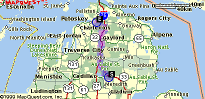
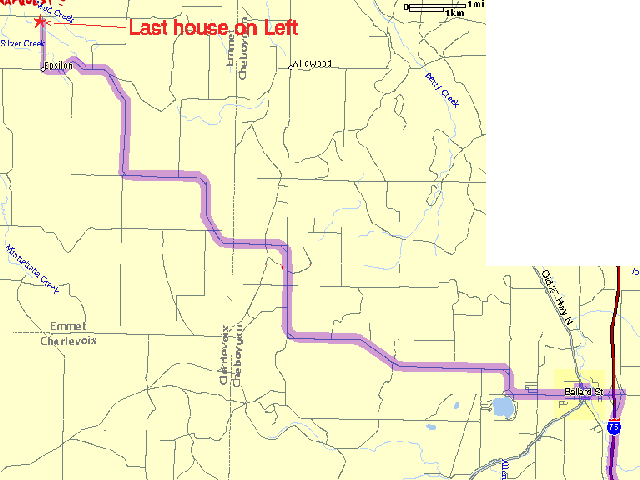
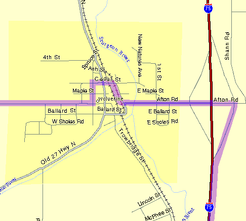

|
|
|  | |
| Starting
Location
Southern Michigan |
Destination/Mailing Address
460 SILVER CREEK ROAD PETOSKEY, MI 49770 |
| Directions | Distance |
| 1: Take I-75 NORTH towards GRAYLING/MACKINAC BR. | |
| 2: Take the CR-C58 exit, exit number 301, towards WOLVERINE. |
0.4 miles
(0.6 km) |
| 3: At the Stop sign, turn LEFT onto AFTON RD. |
0.6 miles
(1.0 km) |
| 4: AFTON RD becomes CEDAR ST. |
0.2 miles
(0.4 km) |
| 5: At the stop sign, turn LEFT onto PINE ST. |
0.1 miles
(0.2 km) |
| 6: Watching for the C58 sign, turn RIGHT onto MAIN ST. |
0.3 miles
(0.4 km) |
| 7: MAIN ST becomes WOLVERINE RD. |
9.9 miles
(15.9 km) |
| 8: WOLVERINE RD becomes MITCHELL RD. |
4.4 miles
(7.0 km) |
| 9: 1 mile after passing Ellsworth road, turn RIGHT onto Silver Creek RD. The Springvale township fire hall is on the left. | |
| 10: Drive 1 mile on Silver Creek. Our house is the last driveway on the left, just before the stop sign. | |
|  | |
|  | |